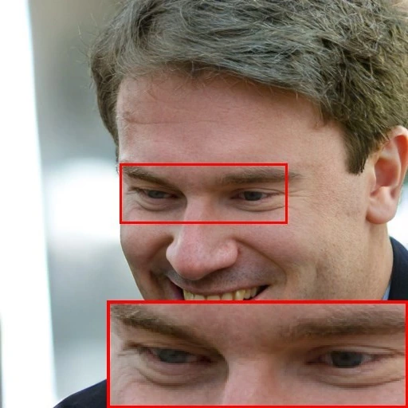
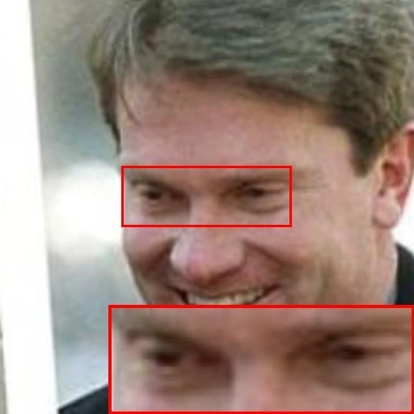
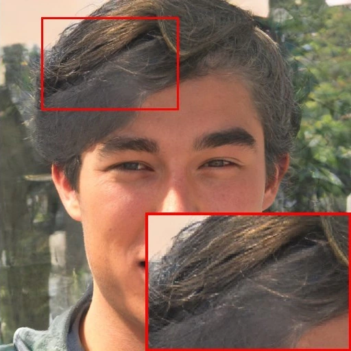
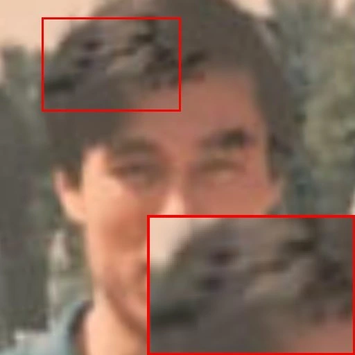
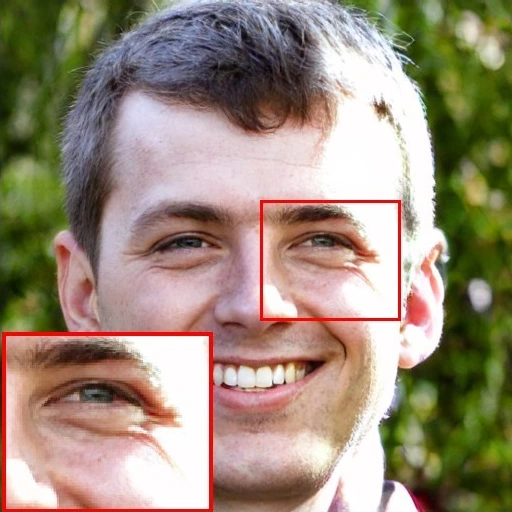
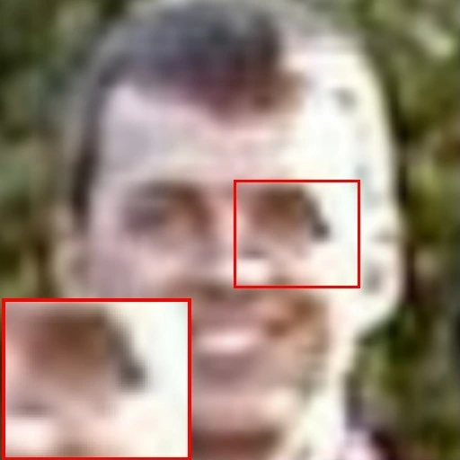
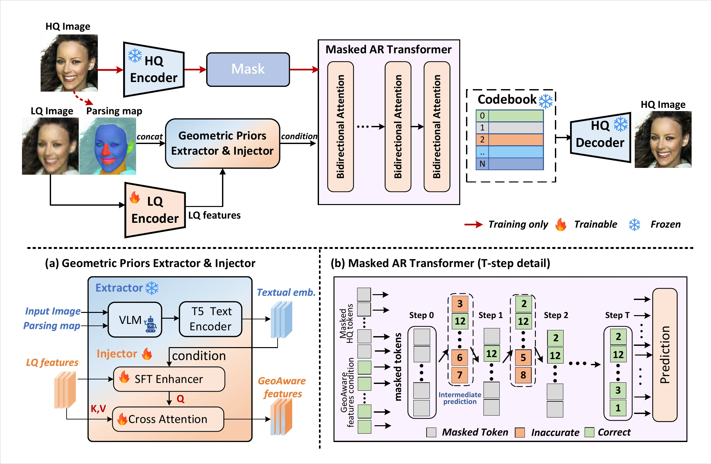
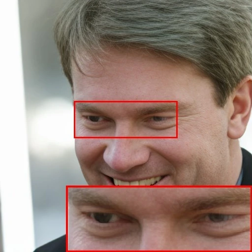
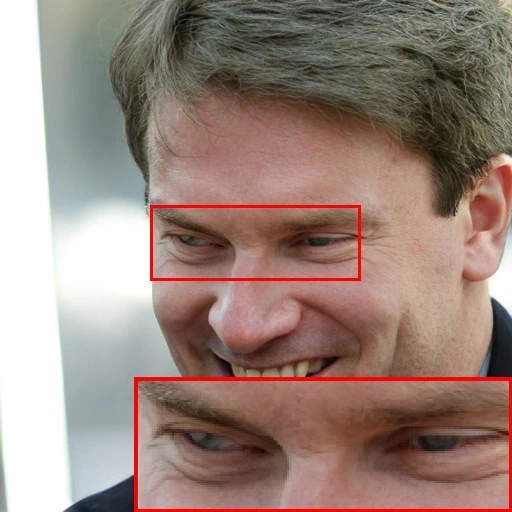

GeoMAR: Unleashing Geometrically Aligned Features for Masked Autoregressive Blind Face Restoration
3 The Technology Innovation Center for Collaborative Applications of Natural Resources Data in GBA, MNR
ACM Multimedia 2026


InputGeoMAR

InputGeoMAR

InputGeoMARAbstract
Codebook-based blind face restoration (BFR) often suffers from ambiguous conditioning features and a fragile prediction mechanism under severe degradation. To address these challenges, we propose GeoMAR, a framework designed to unleash geometrically aligned features with masked autoregressive (MAR) refinement for robust face restoration. For feature conditioning, we introduce a dual-input extraction pipeline to extract component-based geometric descriptions with explicit, spatially faithful anchors. These textual priors are integrated with low-quality (LQ) features via an Aligned Geometric Priors Injector, which employs a KV-Q exchange strategy to generate geometrically aligned features. For prediction mechanism, we reformulate the one-step mapping into a multi-step MAR process. This coarse-to-fine generation progressively refines complex facial regions based on increasingly reliable context. Experiments on one synthetic and three real-world benchmarks demonstrate that GeoMAR achieves highly competitive perceptual quality and coherent visual structures compared with existing methods.
Overview

Geometrically aligned conditioning. A vision-language model jointly reads the RGB image and its facial parsing map to describe individual facial components. The injector combines these textual priors with low-quality features through SFT enhancement and KV-Q exchange cross-attention.
Masked autoregressive refinement. Instead of predicting every latent code in a single pass, the transformer progressively predicts and refines facial codes using increasingly reliable context. The default configuration uses eight prediction steps.
Qualitative Comparisons
For more results, please refer to the supplementary material.


Quantitative Comparison
Real-world Benchmarks
| Prior type | Method | LFW-Test | WebPhoto-Test | WIDER-Test | ||||||
|---|---|---|---|---|---|---|---|---|---|---|
| FID ↓ | NIQE ↓ | MANIQA ↑ | FID ↓ | NIQE ↓ | MANIQA ↑ | FID ↓ | NIQE ↓ | MANIQA ↑ | ||
| GAN-based | GFPGAN | 53.86 | 4.742 | 0.456 | 100.20 | 4.970 | 0.438 | 49.45 | 4.693 | 0.439 |
| GPEN | 55.18 | 4.538 | 0.479 | 85.63 | 5.306 | 0.438 | 58.52 | 5.264 | 0.450 | |
| Diffusion-based | DR2 | 50.79 | 4.538 | 0.525 | 113.37 | 6.035 | 0.412 | 54.70 | 5.904 | 0.407 |
| DifFace | 46.35 | 3.813 | 0.461 | 80.69 | 4.372 | 0.425 | 37.43 | 4.255 | 0.431 | |
| VSPBFR | 46.37 | 3.746 | 0.533 | 77.24 | 4.218 | 0.502 | 38.20 | 3.579 | 0.493 | |
| DiffusionReward | 48.92 | 4.386 | 0.517 | 79.49 | 5.202 | 0.483 | 36.49 | 4.724 | 0.492 | |
| Codebook-based | VQFR | 50.09 | 3.836 | 0.534 | 85.28 | 4.608 | 0.491 | 37.87 | 4.036 | 0.504 |
| CodeFormer | 52.84 | 4.438 | 0.527 | 83.94 | 5.529 | 0.503 | 38.78 | 4.119 | 0.496 | |
| DAEFR | 47.53 | 3.552 | 0.542 | 75.79 | 3.933 | 0.493 | 36.72 | 3.655 | 0.520 | |
| GeoMAR Ours | 46.87 | 3.547 | 0.540 | 75.73 | 3.930 | 0.499 | 37.37 | 3.762 | 0.510 | |
CelebA-Test · Degradation FID = 144
| Prior type | Method | FID ↓ | NIQE ↓ | MANIQA ↑ | PSNR (dB) ↑ | SSIM ↑ | LMD (%) ↓ |
|---|---|---|---|---|---|---|---|
| GAN-based | GFPGAN | 52.29 | 4.565 | 0.466 | 25.80 | 0.708 | 2.52 |
| GPEN | 51.46 | 4.817 | 0.459 | 25.77 | 0.703 | 2.50 | |
| Diffusion-based | DR2 | 58.59 | 5.370 | 0.487 | 24.45 | 0.679 | 2.66 |
| DifFace | 37.88 | 4.157 | 0.468 | 24.80 | 0.673 | 2.47 | |
| VSPBFR | 38.52 | 3.839 | 0.546 | 24.73 | 0.657 | 2.37 | |
| DiffusionReward | 42.59 | 4.545 | 0.537 | 26.33 | 0.701 | 2.15 | |
| Codebook-based | VQFR | 46.77 | 4.204 | 0.540 | 23.76 | 0.659 | 2.45 |
| CodeFormer | 52.42 | 4.594 | 0.538 | 25.15 | 0.670 | 2.32 | |
| DAEFR | 40.76 | 3.744 | 0.545 | 22.59 | 0.609 | 2.44 | |
| GeoMAR Ours | 39.61 | 3.819 | 0.541 | 21.95 | 0.597 | 2.66 |
CelebA-Test · Degradation FID = 267
| Prior type | Method | FID ↓ | NIQE ↓ | MANIQA ↑ | PSNR (dB) ↑ | SSIM ↑ | LMD (%) ↓ |
|---|---|---|---|---|---|---|---|
| GAN-based | GFPGAN | 79.30 | 5.451 | 0.453 | 21.97 | 0.611 | 8.89 |
| GPEN | 72.99 | 5.723 | 0.447 | 22.05 | 0.619 | 9.19 | |
| Diffusion-based | DR2 | 72.41 | 5.579 | 0.477 | 21.28 | 0.606 | 4.40 |
| DifFace | 47.89 | 4.513 | 0.461 | 22.81 | 0.604 | 3.16 | |
| VSPBFR | 43.28 | 3.512 | 0.500 | 21.02 | 0.503 | 4.76 | |
| DiffusionReward | 49.70 | 5.021 | 0.534 | 23.25 | 0.640 | 3.04 | |
| Codebook-based | VQFR | 53.73 | 4.743 | 0.553 | 21.84 | 0.621 | 3.28 |
| CodeFormer | 58.31 | 4.566 | 0.556 | 22.19 | 0.594 | 3.18 | |
| DAEFR | 47.50 | 4.500 | 0.570 | 20.29 | 0.588 | 3.29 | |
| GeoMAR Ours | 42.13 | 4.223 | 0.554 | 20.23 | 0.562 | 3.62 |
Citation
If you find this work useful, please consider citing our paper. ACM publication
@inproceedings{gan2026geomar,
title = {GeoMAR: Unleashing Geometrically Aligned Features for
Masked Autoregressive Blind Face Restoration},
author = {Gan, Lu and Yan, Hanyu and Chen, Chaofeng and
Hu, Junqi and Zeng, Dan},
booktitle = {Proceedings of the 34th ACM International Conference
on Multimedia},
year = {2026},
doi = {10.1145/3767308.3836198}
}